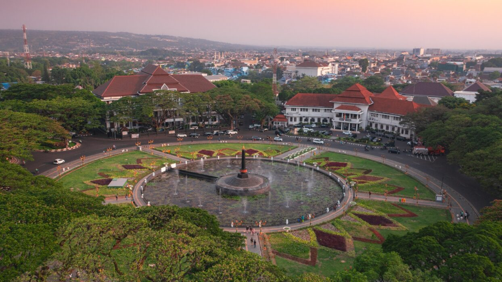
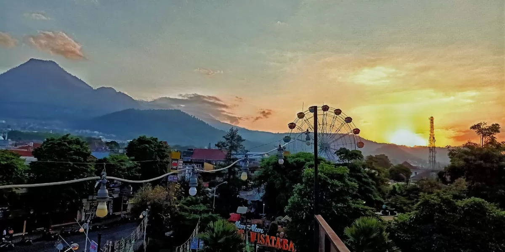

📜 Sejarah Agung Malang Raya
Zaman Kerajaan Kuno: Malang Raya adalah jantung peradaban Jawa Timur purba. Menurut Prasasti Dinoyo (760 M), Kerajaan Kanjuruhan di bawah Raja Gajayana telah menetapkan standar pemerintahan yang tinggi. Wilayah ini bukan sekadar pemukiman, melainkan pusat spiritual Hindu-Buddha yang suci.
Imperium Singhasari: Di sinilah Ken Arok mendirikan Dinasti Rajasa, yang keturunannya kelak menjadi penguasa Majapahit. Legenda Keris Mpu Gandring dan kisah cinta Ken Dedes berakar kuat di tanah ini. Candi Singosari menjadi bukti kecanggihan teknologi pahat batu abad ke-13 yang tak tertandingi di masanya.
Arti Nama "Malang": Berasal dari "Malangkucecwara", sebuah gelar sakral yang berarti "Tuhan telah menghancurkan yang bathil dan menegakkan yang benar". Nama ini mencerminkan tekad masyarakat Malang yang jujur, keras, dan pantang menyerah terhadap ketidakadilan.
Era Kolonialisme: Belanda mengubah Malang menjadi "Parijs van Oost-Java". Dengan iklim sejuk dan tanah subur, Malang dijadikan pusat perkebunan tebu dan kopi dunia. Pembangunan Stasiun Malang Kotabaru dan Gereja Kayutangan menjadi saksi bisu kemewahan era *Indische*.

Malang: Episentrum Peradaban
Malang adalah kuali peleburan antara kemegahan masa lalu dan dinamika kota pelajar. Lima kecamatan utamanya memiliki peran krusial:
- Klojen: Pusat sejarah dengan Ijen Boulevard yang dirancang Thomas Karsten, taman-taman asri, dan Balai Kota megah bergaya kolonial.
- Lowokwaru: Jantung pendidikan. Tempat berkumpulnya ribuan mahasiswa dari berbagai suku bangsa yang menciptakan keberagaman sosiokultural yang tinggi.
- Blimbing: Pusat ekonomi dan gerbang masuk utama dari sisi Utara yang menghubungkan Malang dengan Surabaya.
- Sukun & Kedungkandang: Kawasan industri strategis dan perluasan pemukiman modern yang tetap mempertahankan nuansa hijau.
Batu: The Switzerland of Java
Batu adalah "Ruang Bernapas" Jawa Timur. Dahulu merupakan wilayah administrasi Kabupaten Malang, namun karena potensi pariwisatanya yang luar biasa, Batu resmi menjadi kota mandiri pada tahun 2001.
- Legenda Mbah Wastu: Nama Batu diambil dari Syekh Abu Ghonaim (Mbah Wastu), ulama sufi penyebar Islam yang menetap di kaki Gunung Panderman.
- Agrikultur: Dikenal sebagai penghasil apel varietas Rome Beauty dan Manalagi. Udara dinginnya juga menjadikan Batu sebagai sentra tanaman hias terbesar di Asia Tenggara.
- Wisata Modern: Batu kini memiliki kompleks wisata edukasi terbesar di Indonesia, Jatim Park Group, serta Museum Angkut yang berstandar internasional.

🎎 Budaya & Adat Istiadat Leluhur
Boso Walikan (Bahasa Terbalik)
Identitas Arek Malang yang lahir sebagai strategi militer saat Agresi Militer Belanda. Contoh: "Ayas Arema" (Saya Arek Malang). Bahasa ini tetap lestari sebagai perekat persaudaraan.
Wayang Topeng Malangan
Kesenian khas yang menggabungkan tari dan drama. Berbeda dengan Jawa Tengah, topeng Malangan lebih ekspresif dengan warna mencolok yang melambangkan emosi manusia.
Kesenian Bantengan
Seni bela diri spiritual yang menggambarkan kekuatan alam liar pegunungan. Penari Bantengan mengenakan tanduk asli dan menari dengan iringan musik pencak yang enerjik.
Tradisi Bersih Desa
Upacara syukur tahunan yang dilakukan oleh desa-desa agraris di Malang dan Batu dengan mengarak hasil bumi sebagai persembahan bagi alam semesta.
🏗️ Arsitektur & Keanekaragaman
Salah satu yang membuat Malang dan Batu unik adalah **Tata Kota 'Garden City'**. Thomas Karsten, arsitek ternama Belanda, merancang Malang agar tidak panas dengan membangun koridor hijau yang luas. Struktur jalan yang memutar (roundabout) di depan Balai Kota dirancang agar angin gunung bisa masuk ke pusat kota dengan lancar.
Keanekaragaman flora di sini juga mencengangkan. Karena berada di pertemuan beberapa pegunungan (Arjuno-Welirang, Kawi, dan Bromo-Tengger), Malang Raya memiliki spesies endemik Elang Jawa yang sangat langka. Upaya pelestarian hutan lindung di Batu menjadi kunci agar pasokan air ke seluruh Jawa Timur tetap terjaga.
🍜 Gastronomi Legendaris Malang Raya
Malang Raya bukan hanya soal pemandangan, tapi juga surga bagi lidah para petualang rasa. Berikut adalah katalog kuliner yang telah melegenda dan menjadi bagian dari sejarah identitas kota:
Bakso Malang Authentic
Berbeda dengan bakso daerah lain, varian Malang menyajikan keharmonisan antara bakso halus, bakso urat, gorengan mekar, siomay, dan kekian dalam kaldu bening yang sangat gurih.
Cwie Mie Malang Asli
Mi tipis kenyal dengan topping ayam cincang halus yang gurih, disajikan dengan selada segar dan kulit pangsit goreng. Cita rasa Tionghoa yang telah berakulturasi sempurna dengan lidah lokal.
Orem-Orem Tempe
Kuliner khas rakyat Malang berupa irisan tempe goreng yang dimasak dalam kuah santan kental berbumbu kuning, disajikan dengan ketupat dan tauge segar.
Sate Kelinci & Ketan
Kuliner wajib saat berkunjung ke Kota Batu. Daging kelinci yang empuk dengan bumbu kacang kental, sangat nikmat disantap di tengah dinginnya udara pegunungan.
Rawon Nguling
Sup daging sapi kuah hitam legendaris dengan aroma kluwek yang kuat. Disajikan dengan tauge pendek, sambal terasi, dan telur asin sebagai pelengkap wajib.
Keripik Buah Premium
Manifestasi kesuburan tanah Batu. Melalui teknologi vacuum frying, buah-buahan segar seperti apel, nangka, dan salak diubah menjadi keripik renyah tanpa menghilangkan rasa aslinya.